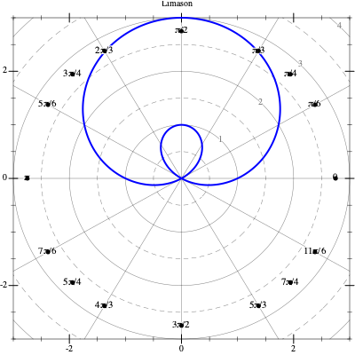

Polar Curves
1 Cartesian & Polar Coordinates

2 Transformations
Example 1: Cartesian to Polar
Convert x^2 + y^2 = 1 to polar coordinates.
Using the substitutions x = r \cos \theta and y = r\sin\theta
\begin{align*} x^2 + y^2 &= 1 \\ (r\cos\theta)^2 + (r\sin\theta)^2 &= 1 \\ r^2\cos^2\theta + r^2\sin^2\theta &= 1 \\ r^2(\cos^2\theta + \sin^2\theta) &= 1 \\ r^2(1) &= 1 \\ r^2 &= 1 \\ r &= 1 \end{align*}
So the unit circle x^2+y^2=1 corresponds simply to r = 1 in polar coordinates.
Example 2: Polar to Cartesian
Convert r = \sin\theta to Cartesian coordinates.
Multiply both sides by r:
\begin{align*} r &= \sin\theta \\ r^2 &= r\sin\theta \end{align*}
Now use r^2 = x^2+y^2 and y = r\sin\theta: \begin{align*} x^2 + y^2 &= y \end{align*}
Complete the square in y: \begin{align*} x^2 + y^2 - y &= 0 \\ x^2 + \left(y - \tfrac{1}{2}\right)^2 &= \tfrac{1}{4} \end{align*}
This is a circle of radius \tfrac{1}{2} centered at \left(0, \tfrac{1}{2}\right).
3 Circle
Here’s a circle r = 3\cos\theta traced in the plane:

4 Cardioid
Here’s a cardioid r = 1 + 2\sin\theta traced in the plane:

5 Limason
Here’s a Limason r = 2 + \sin\theta traced in the plane:

6 Roses
Here’s a three petal rose r = \sin 3\theta traced in the plane:

Here’s a four petal rose r = \cos 2\theta traced in the plane:

7 Practice your graphing skills
On the following link Practice you can practice your polar graphing skills